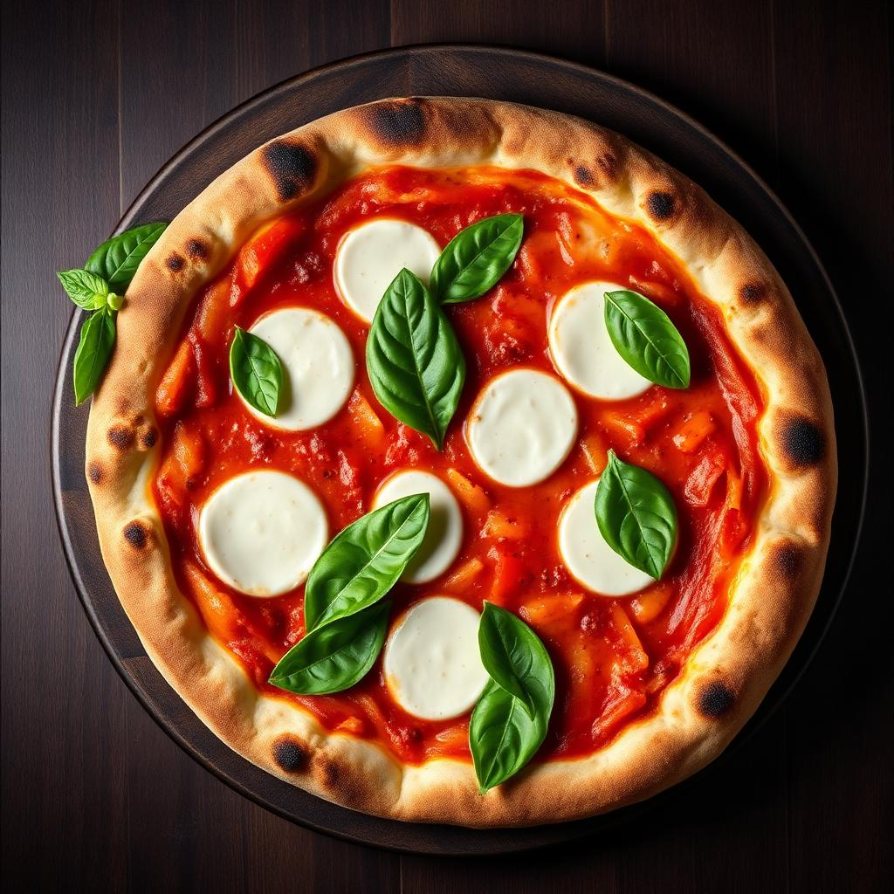
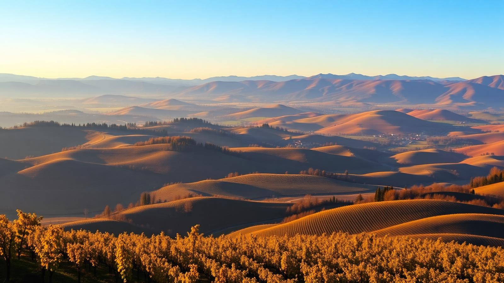
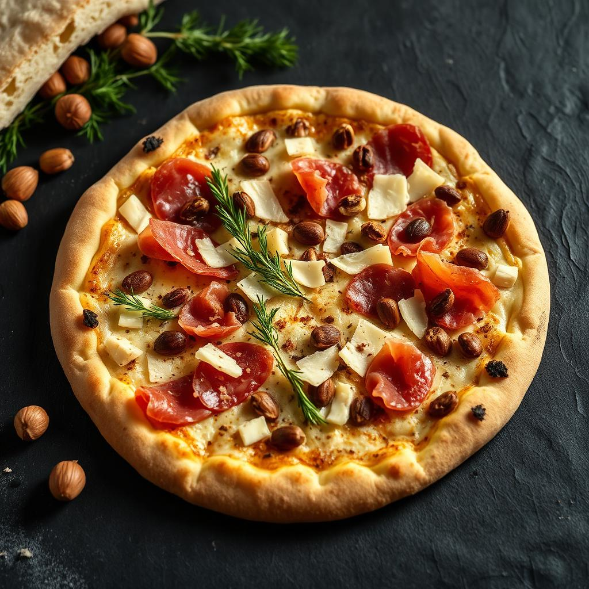
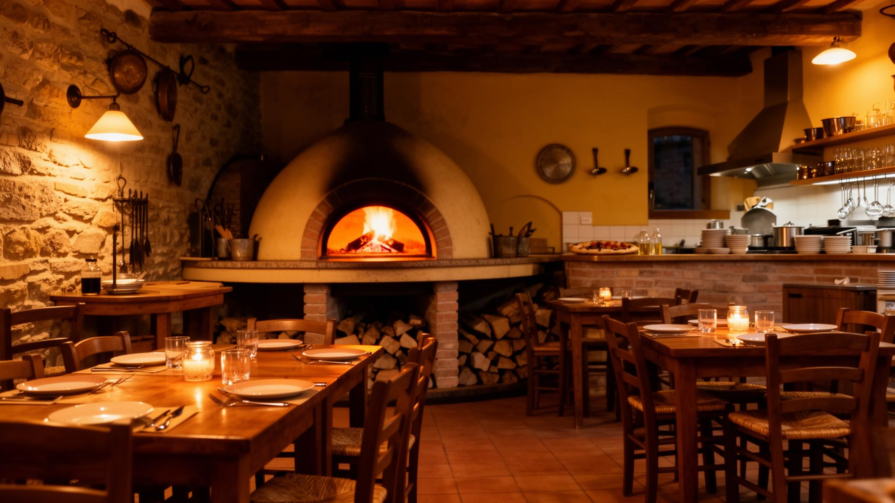

Le Classiche
Margherita, Marinara, Diavola, Capricciosa. La tradizione napoletana come si deve.
Una pizzeria di famiglia nel cuore delle Langhe, dove Clara, Anna ed Elena impastano accoglienza, tradizione piemontese e porzioni che non deludono mai.
A Gorzegno, dove le colline delle Langhe si fanno più silenziose, abbiamo aperto le porte di un locale che è prima di tutto casa. Clara, Anna ed Elena: madre, figlie, amiche dei clienti — chiamateci come volete, l'importante è sedersi.
Da noi si entra per un caffè la mattina, ci si ferma per una pizza la sera, e spesso si resta a chiacchierare fino a tardi. Le porzioni sono generose, gli ingredienti vengono dal territorio, e il nome del locale è una promessa in dialetto: "fà ch'et n'abi" — fai in modo di averne abbastanza.
Noi questo, ce lo prendiamo sul serio.


Margherita, Marinara, Diavola, Capricciosa. La tradizione napoletana come si deve.

Castelmagno DOP, nocciole Tonda Gentile, salsiccia di Bra, Raschera. Il territorio nel piatto.

Impasto a lunga lievitazione, cottura nel forno a legna. Cornicione alto e leggero.
Apertura dal venerdì mattina per colazioni e bar, weekend pizzeria a pranzo e cena.
★★★★★
Su 303 recensioni Google.
Grazie a chi torna, e a chi ci scopre per la prima volta.
Chiamaci per informazioni, ordini d'asporto o consegna a domicilio nella zona.
338 165 3446